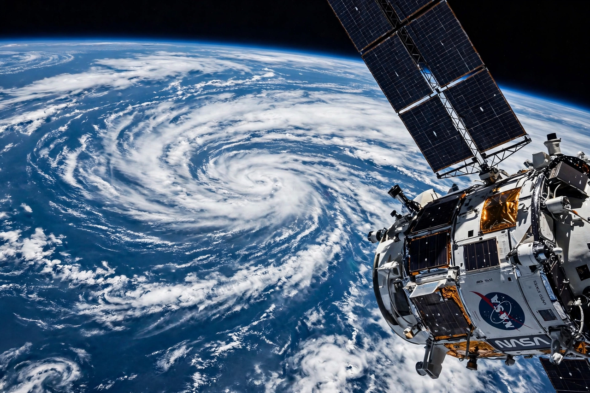

[Image: Earth seen from orbit with a spacecraft structure in frame — NASA homepage hero imagery as remembered]
Latest from NASA
Featured stories on the modern NASA homepage rotate constantly: progress on the Artemis lunar campaign, crew rotations aboard the International Space Station, new imagery from the James Webb Space Telescope, Earth-observing satellite findings, and aeronautics research such as the X-59 quiet supersonic aircraft.
Explore
- Missions — every current, past and future NASA mission
- Humans in Space — astronauts, the ISS, and commercial crew
- Earth — climate and Earth-science missions watching our home planet
- The Solar System — the Moon, Mars, and the planets
- The Universe — astrophysics, exoplanets, and the cosmic frontier
- Image of the Day — a new space image featured daily
NASA+
NASA's streaming service, NASA+, offers live launches, documentaries and original series free and without a subscription, and the agency's podcasts — including Houston We Have a Podcast and Curious Universe — bring missions to listeners everywhere.